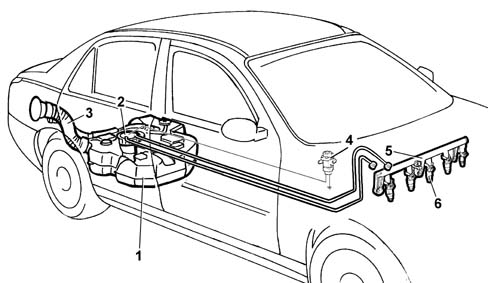

Specifications
- Path
- Descriptions > 10 ENGINE > 1040 FUEL TANK AND PIPES > Specifications
- Kind
- system description
- Applies to
- engines: 2.0 TB; all production periods
- Interactive page
- https://sloeber94.github.io/elrnDB-lThss/en/#/616555
Applies to: engines: 2.0 TB; all production periods
SYSTEM DETAILS
Devices adopted
The fuel supply system is the dual pipe type (one supply pipe and one return pipe) with the filter and pressure regulator built into the pump assembly.
FUEL SUPPLY SYSTEM
The figure shows the fuel system.

- 1 - Fuel tank.
- 2 - Submerged fuel assembly complete with level gauge control.
- 3 - Fuel filler pipe.
- 4 - Inertia switch.
- 5 - Fuel manifold.
- 6 - Injectors [DF1056].